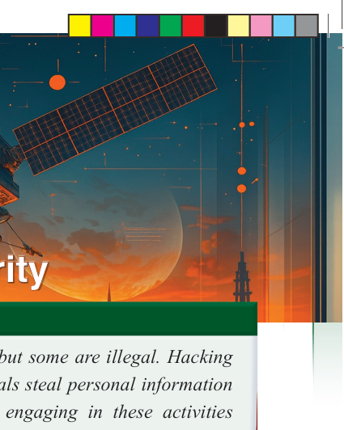
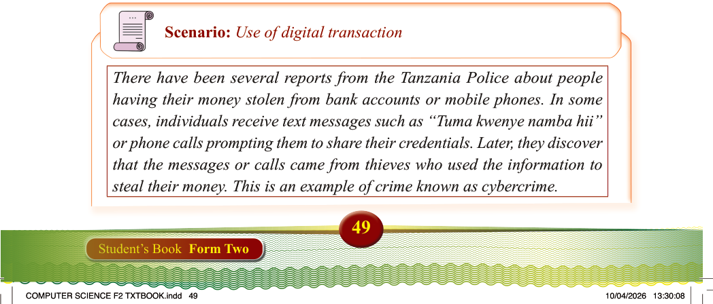
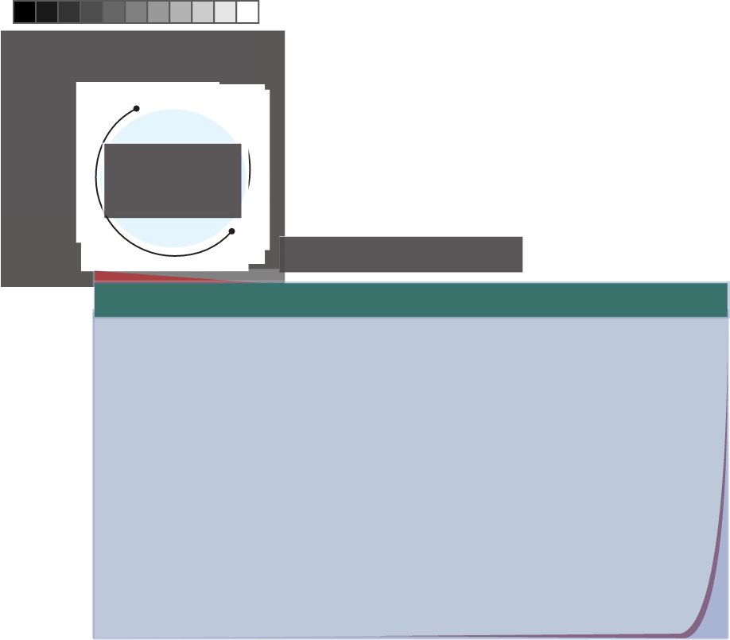

Chapter
Two
Introduction
Many activities that happen online are legal, but some are illegal. Hacking is an illegal activity done online where criminals steal personal information for money, identity theft, or spying. People engaging in these activities commit cybercrimes. To stay safe, you must learn how to protect your online data using strong security measures. Cybersecurity is important as online threats are becoming more common and sophisticated. In this chapter, you will learn the concepts of cybersecurity, cybersecurity threats and attacks, cybercrime, ethical issues and related principles, practices of cybersecurity, and cloud security . The competencies developed will help safeguard data and system resources across digital environments for individuals, businesses, and organizations.
Think
About staying safe in a digital world.
Concept of cybersecurity
Scenario: Use of digital transaction
There have been several reports from the Tanzania Police about people
having their money stolen from bank accounts or mobile phones. In some cases, individuals receive text messages such as “Tuma kwenye namba hii”
or phone calls prompting them to share their credentials. Later, they discover
that the messages or calls came from thieves who used the information to steal their money. This is an example of crime known as cybercrime.
Cybersecurity